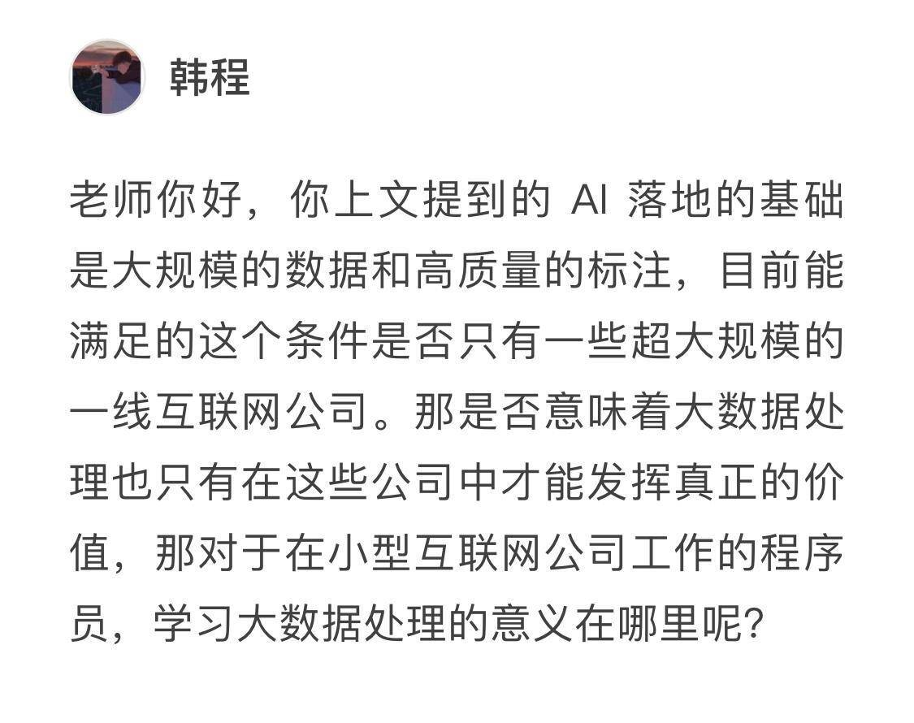
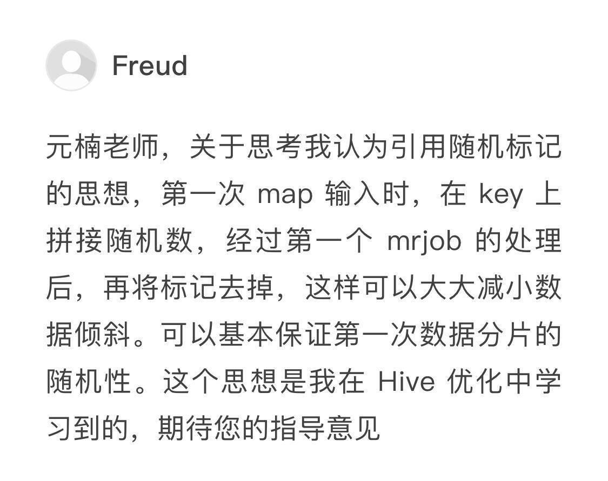
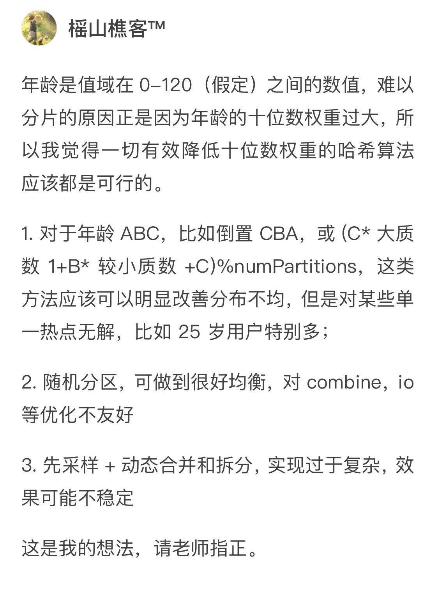
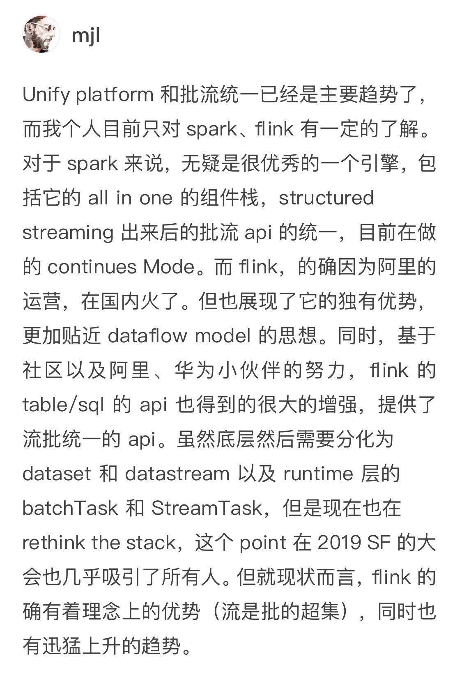
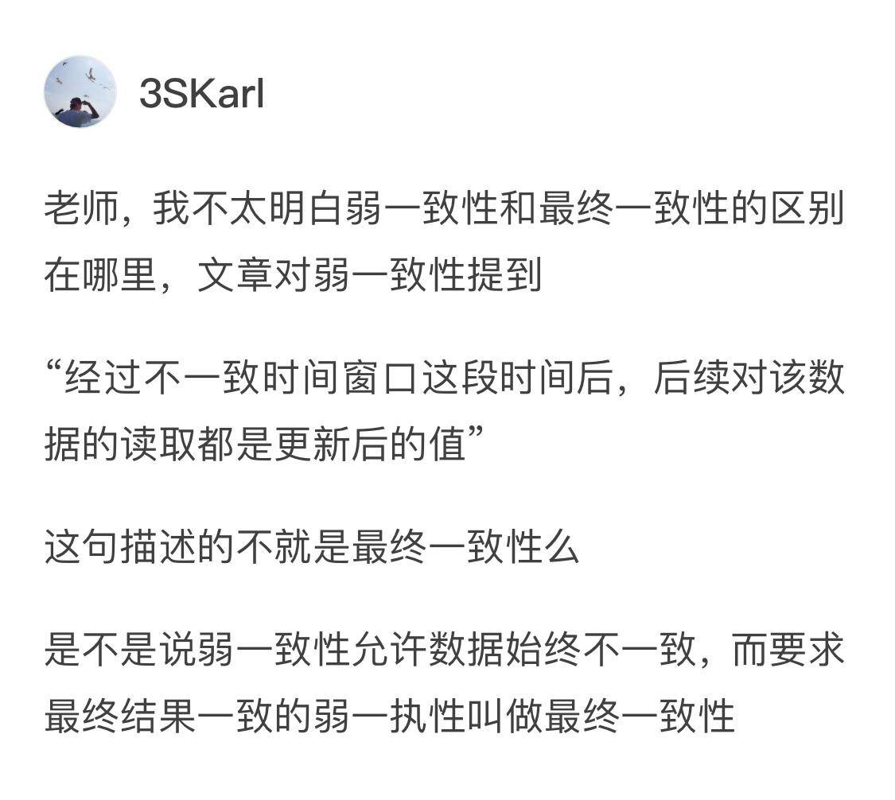
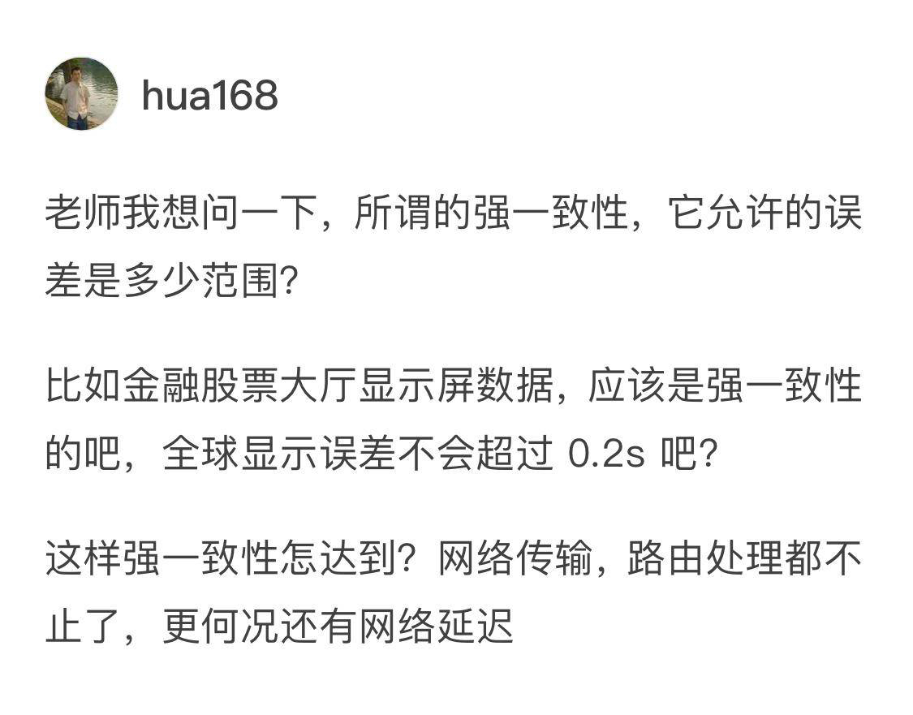

- 00 开篇词 从这里开始，带你走上硅谷一线系统架构师之路.md.html
- 01 为什么MapReduce会被硅谷一线公司淘汰？.md.html
- 02 MapReduce后谁主沉浮：怎样设计下一代数据处理技术？.md.html
- 03 大规模数据处理初体验：怎样实现大型电商热销榜？.md.html
- 04 分布式系统（上）：学会用服务等级协议SLA来评估你的系统.md.html
- 05 分布式系统（下）：架构师不得不知的三大指标.md.html
- 06 如何区分批处理还是流处理？.md.html
- 07 Workflow设计模式：让你在大规模数据世界中君临天下.md.html
- 08 发布_订阅模式：流处理架构中的瑞士军刀.md.html
- 09 CAP定理：三选二，架构师必须学会的取舍.md.html
- 10 Lambda架构：Twitter亿级实时数据分析架构背后的倚天剑.md.html
- 11 Kappa架构：利用Kafka锻造的屠龙刀.md.html
- 12 我们为什么需要Spark？.md.html
- 13 弹性分布式数据集：Spark大厦的地基（上）.md.html
- 14 弹性分布式数据集：Spark大厦的地基（下）.md.html
- 15 Spark SQL：Spark数据查询的利器.md.html
- 16 Spark Streaming：Spark的实时流计算API.md.html
- 17 Structured Streaming：如何用DataFrame API进行实时数据分析_.md.html
- 18 Word Count：从零开始运行你的第一个Spark应用.md.html
- 19 综合案例实战：处理加州房屋信息，构建线性回归模型.md.html
- 20 流处理案例实战：分析纽约市出租车载客信息.md.html
- 21 深入对比Spark与Flink：帮你系统设计两开花.md.html
- 22 Apache Beam的前世今生.md.html
- 23 站在Google的肩膀上学习Beam编程模型.md.html
- 24 PCollection：为什么Beam要如此抽象封装数据？.md.html
- 25 Transform：Beam数据转换操作的抽象方法.md.html
- 26 Pipeline：Beam如何抽象多步骤的数据流水线？.md.html
- 27 Pipeline I_O_ Beam数据中转的设计模式.md.html
- 28 如何设计创建好一个Beam Pipeline？.md.html
- 29 如何测试Beam Pipeline？.md.html
- 30 Apache Beam实战冲刺：Beam如何run everywhere_.md.html
- 31 WordCount Beam Pipeline实战.md.html
- 32 Beam Window：打通流处理的任督二脉.md.html
- 33 横看成岭侧成峰：再战Streaming WordCount.md.html
- 34 Amazon热销榜Beam Pipeline实战.md.html
- 35 Facebook游戏实时流处理Beam Pipeline实战（上）.md.html
- 36 Facebook游戏实时流处理Beam Pipeline实战（下）.md.html
- 37 5G时代，如何处理超大规模物联网数据.md.html
- 38 大规模数据处理在深度学习中如何应用？.md.html
- 39 从SQL到Streaming SQL：突破静态数据查询的次元.md.html
- 40 大规模数据处理未来之路.md.html
- FAQ第一期 学习大规模数据处理需要什么基础？.md.html
- FAQ第三期 Apache Beam基础答疑.md.html
- FAQ第二期 Spark案例实战答疑.md.html
- 加油站 Practice makes perfect！.md.html
- 结束语 世间所有的相遇，都是久别重逢.md.html
- 捐赠
FAQ第一期 学习大规模数据处理需要什么基础？
你好，我是蔡元楠。
专栏上线已经一个月了，在这里我要先感谢大家的留言，留言的对答可以使我们互有补益。
这段时间，我发现留言中的很多问题都很有价值，希望你也可以看到。所以，我根据已发布的文章中的思考题，从留言中摘录了一些典型的、常见的问题做出答疑集锦，最终成为了今天你看到的“特别福利篇”。
“开篇词”问题精选
问题一：学习大规模数据处理需要有什么基础？
这是一个很好的问题，虽然专栏已经更新了一个月，我还是要把这个开篇词中的提问放进来。就像你看到的那样，有好几位读者都问了类似的问题。
其实在最开始做专栏的内容设计时，我并没有对读者的知识背景作任何假设。
所以，即使是一些基础的技术概念，我也会举例解释一下（如果你已经会了可能会觉得啰嗦，这时候就需要你照顾一下其他同学了）。如果你有一些语言的编程经验（任何语言都可以）的话，看文章的理解速度会快一点。文章中会有一些示例代码，是用Python编写的。
但是在设计类型的案例中，我不觉得它对读者有特别的技术要求。
希望你在后面的阅读中提出建议，告诉我有哪些地方我讲得不够清楚，或者解释的过多，我会适当调整内容。
问题二：小型公司程序员学习大规模数据处理的意义？
- 这个问题问得很好。以客观条件来看，韩程的说法没有问题。
大规模的互联网公司天生数据量是要大一些的。但是，这并不意味着大数据处理只在大公司才能发挥价值。你也要考虑其他方面。
第一，对于公司来讲，小型互联网公司或者传统企业，并不是不需要数据处理技能，而是他们还没有从数据中挖掘business insight的意识，没有数据驱动决策的意识，甚至没有收集数据的意识。
举个我工作中见到的例子。比如，有些饲养奶牛的农户，他们几十年来根本不知道什么是数据。但是，当我们帮他们细致地搜集奶牛每天的活动数据，比如饮食、运动、作息、产奶，他们就能从中找到最经济（最优）的饲料投放方式。
第二，对于个人来讲，你就一定要看长期的职业发展，公司会从小变大，职位会从低变高。当你需要影响决策的时候，当你面临的数据量变多的时候，当你准备跳槽的时候，数据的处理能力都是至关重要的。
“第一讲”问题精选
思考题：如果你在Facebook负责处理用户数据，你会选择什么样的分片函数来保证均匀分布的数据分片？
我发现有很多精彩的回答。比如下图中的CountingStars同学，他的思路非常有意思。是把年龄的数值前后颠倒进行分片。
还有这位Mark Lee，他认为可以使用身份证后面的随机数来进行分片，纯技术上看起来似乎可行。但要使用用户的身份ID的话，你还需要考虑是否符合法律、道德、隐私方面的问题。
而Freud的想法是引用随机标记来保证数据分片的随机性。但这里要保证数据的均匀可重复才行。如果你在shard2上的任务失败，你需要能够还原出错的任务并进行重试。

榣山樵客把这几个回答可能出现的问题做了个总结。他的回复是一切有效降低十位数权重的哈希算法都是可行的。

倒置年龄可以明显改善分布不均的问题，但是也可能对某些单一热点无解，比如25岁的用户特别多的话还是会出问题。
随机分区可以做到均衡，但对combine、io等优化不够友好。还有一个缺点，是当分区任务失败，需要重新分区的时候，分区结果不再是deterministic的。如果某一台机器宕机了，你要如何重新分配原本属于这台机器上的用户数据？
先采样，再动态合并和拆分的实现过于复杂，效果可能不够稳定。
像他一样，在每个答案里都分别给出这个答案所存在的不足，这一点是我非常赞赏的。在开发设计中没有哪个答案是特别完美的，我们能做的是分析哪一个才是最符合自身应用需求，进而改善。
“第二讲”问题精选
第二讲中，我留下的思考题是“你现在正在使用的数据处理技术有什么问题？你有怎样的改进设计？”。
mjl在回答中阐述了他比较了解的Spark和Flink，总结得很好。

虽然原生Spark Streaming Model和Dataflow Model不一样，但是Cloudera Labs也有根据Dataflow Model的原理实现了Spark Dataflow，使得Beam也可以跑Spark runner。
而对于Flink来说的话，在0.10版本以后，它的DataStream API就已经是根据Dataflow Model的思想来重写了。
现在Flink也支持两套API，分别是DataStream版本的和Beam版本的。其实data Artisans一直都有和Google保持交流，希望未来两套Beam和Flink的API能达到统一。
最后赞一点，批处理是流处理的子集，这个观点我在第一讲的留言中也提到过。
第三讲和第四讲中问题较为开放，与读者自身的工作内容强相关，很多都是大家在分享自己的经验，内容很丰富，这里篇幅不足，建议大家去原文的留言中看一看。
“第五讲”问题精选
第五讲中讲的主要是分布式处理系统的三个重要指标：扩展性，一致性和持久性。根据这个内容，3SKarl同学提问弱一致性和最终一致性的区别是什么。

这是个很棒的问题。简而言之，弱一致性是个很宽泛的概念，它是区别于强一致性而定义的。广义上讲，任何不是强一致的，而又有某种同步性的分布式系统，我们都可以说它是弱一致的。
而最终一致性是弱一致性的一个特例，而且是最常被各种分布式系统用到的一个特例。
其他的比如因果一致性、FIFO一致性等都可以看作是弱一致性的特例，不同弱一致性只是对数据不同步的容忍程度不同，但是经过一段时间，所有节点的数据都要求要一致。
学习专栏时，重要的是理解它们的区别。这部分知识是为了后边讲CAP理论服务的，实际的工作中也不会像考试考概念题一样，让你背写这些一致性的定义。

hua168同学问的是强一致性的误差范围。这个问题非常有趣，强一致性并没有误差可言的，强一致性简单地说指的就是如果更新一条数据，那所有用户读取数据的时候必须都看到这条更新了的数据。
在这里我也想借着FAQ分享一个自己当年在面试Bloomberg的面试经历。
面试官给我出的题目是这样的：如果要设计Bloomberg的股票信息系统中的数据库系统，系统需要实时更新股票价格，而数据更新的写入量非常大，用户也需要读取最新的股票资讯，你会如何设计这套系统。
这个问题其实有很多的未知区域需要我们去和面试官去阐明，例如用户的Use Cases是什么？在此我就不一一展开了，在这里我只想分享一个和一致性相关的内容。
在和Bloomberg的Tech Lead讨论时我发现，原来他们的股票系统显示的股价并不是强一致性的，延迟范围是1分钟左右。
因为应用场景上，普通股民并不会需要实时关心每秒钟股票价格的动态，更多的是关心大盘走势。而金融巨头在操作股票的时候，更多只关心特定的几只股票，所以这些股票的价格通常对于他们来说会更新快一点。
所以说，很多现实生活上的实际应用和我们本来想象的并不太一样。
到这里，我们的第一期答疑就结束了。
就像我在专栏一开始的时候与你说的一样，我希望你能够积极与我互动。其实很多同样的问题会在不同的人身上重复出现，你不表达出来的话，可能永远也不知道，原来有那么多人曾经和你遇到过同样的困境。
如果你觉得有所收获，欢迎你把文章分享给你的朋友。
© 2019 - 2023 Liangliang Lee. Powered by gin and hexo-theme-book.